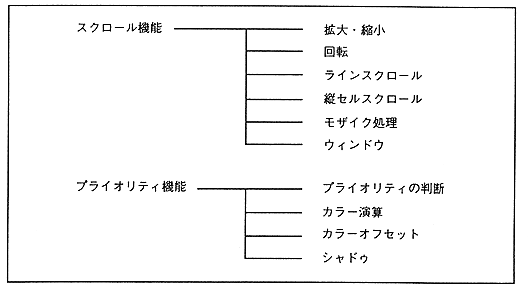

VDP2 has a scroll function that controls the display of the scroll screen and a priority function that determines the display priority (Figure 3.13).
Figure 3.13 Scroll and priority function

● Scroll function
Scroll has a scroll screen for displaying pictures and a window for controlling the display.
● Scroll screen
The scroll screen has a normal scroll screen that can change the number of displayable screens and a rotary scroll screen that can be rotated.
Table 3.8 shows the normal scroll screen and rotary scroll screen functions and the number of character colors.